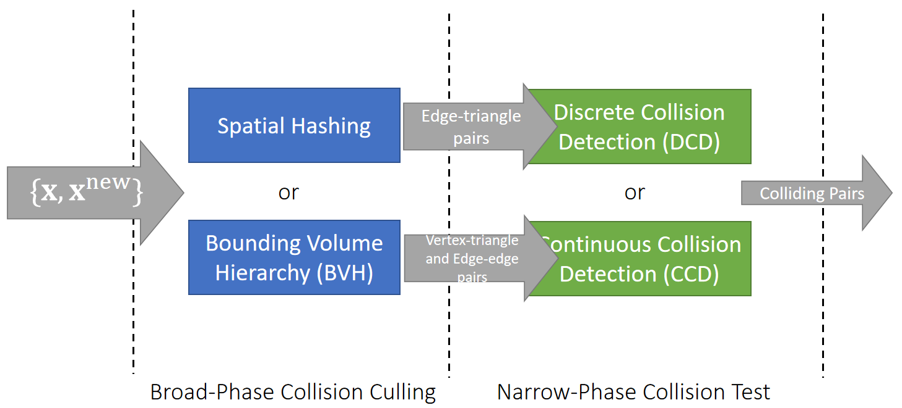

P20
Collision Detection Pipeline

✅ 图画得不对。 DCD 和CCD对输入的需求不同，但SH和 BVH 跟这两种输入不是 一一 对应的关系。
✅ 但DCD和CCD对输入的要求是不一样的。 P20页所谓的 D 还是 C,是以时间角度说的。
P21
Discrete Collision Detection (DCD)
DCD tests if any intersection exists in each state at discrete time instant: \(\mathbf{x}^{[0]}\), \(\mathbf{x}^{[1]}\), …
✅ 准确来说。DCD检测的不是碰撞，而是相交
edge-triangle intersection
To a triangle mesh, the basic test is edge-triangle intersection test.


\(t\) 代表相交位置对应 \(\mathbf{x}_a\) 和\(\mathbf{x}_b\)的插值量
✅ 检测在特定状态下是否相交，每一帧都不相交就认为无碰撞。
✅ 相交和碰撞的区别：相交分析的是运动前后的状态、碰撞检测的是运动的过程、未相交不一定无碰撞、
P22
Tunneling
DCD is simple and robust, but it suffers from the tunneling problem: objects penetrating through each other without being detected.

tunneling problem：当物体运动特别快时，有可能的穿透另一物体而没有被检测到，常见于细薄物体、例如衣服
这种情况无相交但是有碰撞
P23
Continuous Collision Detection (CCD)
CCD tests if any intersection exists between two states: \(\mathbf{x} ^{[0]}\) and \(\mathbf{x} ^{[1]}\).
To a triangle mesh, there two basic tests: vertex-triangle and edge-edge tests.
vertex-triangle tests


✅ 当四点共面时，构成的四面体体积为0、利用四面体的体积公式，可求出四点共面的时间 \(t\) . 这里的\(\mathbf{t}\)是时间
✅ 假设运动是匀速的，\( \mathbf{x}_ {30}(t)、 \mathbf{x}_ {10}(t)、\mathbf{x}_ {20}(t)\)都是关于\(t\)的线性函数。
✅ 一元三次方程有公式解，但用到\(\sqrt[3]{\cdot}\)，因此不建议使用，建议用牛顿法。因为\(\sqrt[3]{\cdot }\) 的误差非常大。
P24
edge-edge tests.
✅ 为什么要检测边边相交，因为有可能三角形相交但点面没有相交。


✅ 先求四点共面的 \(t\)
✅ 解一元三次方程也不建议牛顿法，而是二分法，因为\(t\)的范围是[0,1]
P25
Issues with CCD
- Floating-point errors, especially due to root finding of a cubic equation
- Buffering epsilons, but that causes false positives.
- Gaming GPUs often use single floating-point precision.
✅ 游戏 GPU 以单精度为主，因此要注意浮点误差问题。
-
Computational costs: more expensive than DCD.
- Some argue that broad-phase collision culling is the bottleneck.
-
Difficulty in implementation.
P26
After-Class Reading
Bridson et al. 2002. Robust Treatment of Collisions, Contact and Friction for Cloth Animation. TOG (SIGGRAPH).
Relative simple explicit integration of cloth dynamics
本文出自CaterpillarStudyGroup，转载请注明出处。
https://caterpillarstudygroup.github.io/GAMES103_mdbook/